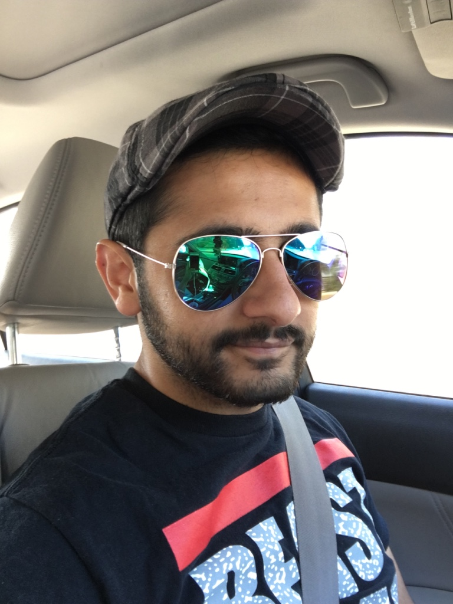

About Me
Hello My name is Moshin Lalani, currently a student at GT bootcamp. So far the journey has been quiet challenging with many ups and downs but I have to hang in there. I have have always backed away from challenges and nothing has ever come so easily always had to struggle but hey I guess that's part of life.
I been away from school for quiet sometime about 8 years I believe. I wanted to pursue school but never had opportunity due to fiancial issues. Thank god, all is well now and finally I am able to pursue new carrer field.
I currently reside in Gwinnett county where I have been living for many years now. Day by day the traffic keeps getting worse but then again life without traffic in Atlanta is unbelieveable.
I am huge Falcons fan and unlike many others in this town. Everyday I keep up with the team and catch every single game on tv unless I have church meetings. Even though I been following them since 1998 I haven't had single chance to go catch thier own. Hopefully, this years goal is to catch at least one.Other than that I am huge believer in giving back to community, I been volunteering since last 10 years. I am youth lead for our community in which I led the voluneering aspect in both in and outside of community.
Connect with Me